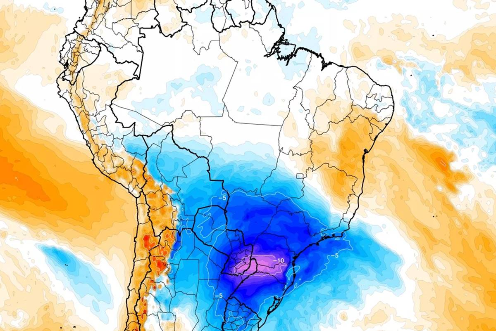
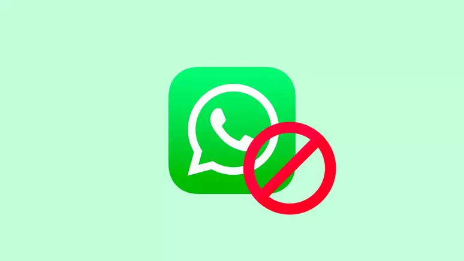

Inicio📍
Que esta segunda-feira à noite seja um momento de renovação. Aproveite para descansar e se preparar para as conquistas que a semana reserva. 🌟

Cada nova semana traz a oportunidade de começar de novo e alcançar novos objetivos...
Economia💰
Quem Deposita na Poupança da Caixa É Atingido?
O recente decreto do Banco Central (BC) tem gerado ampla discussão entre os poupadores brasileiros, especialmente aqueles que utilizam a Caixa Econômica Federal para suas economias. A medida, confirmada pelo Ministro da Fazenda, Fernando Haddad, impacta diretamente os rendimentos das contas poupança, afetando instituições financeiras como a Caixa e o Itaú.
Durante uma coletiva de imprensa, o ministro detalhou as implicações do registro da última reunião do Comitê de Política Monetária (Copom), que decidiu por uma redução mais lenta da taxa básica de juros, a Selic, passando de 0,5 ponto percentual para 0,25 ponto percentual. Essa decisão, que interrompeu uma sequência de seis reduções consecutivas, mantém a taxa de juros em 10,5% ao ano.
A mudança no decreto afeta o cálculo dos ganhos das poupanças, que até então geravam 0,5% ao mês mais a Taxa Referencial (TR), resultando em um retorno anual de 7,71%. Em comparação, outras opções de investimento, como Tesouro Selic e CDBs, oferecem rendimentos mais atraentes, variando de 8,32% a 9,57% ao ano, colocando as poupanças em desvantagem para investidores em busca de maior rentabilidade.
Apesar dos desafios herdados do governo anterior, a inflação está controlada e dentro da meta estabelecida pelo Conselho Monetário Nacional (CMN). O ministro Haddad também aproveitou a ocasião para criticar a gestão inflacionária do governo de Jair Bolsonaro, mencionando a desoneração dos combustíveis como uma estratégia para reduzir artificialmente a inflação.
Este decreto representa um ponto de atenção para os poupadores, que agora devem reavaliar suas estratégias de investimento diante das novas condições impostas pelo BC. A medida visa regularizar e otimizar a administração dos valores depositados nas poupanças, estabelecendo diretrizes claras sobre a gestão desses recursos daqui para frente.
Ciência🪐
Chegada de uma nova massa de ar frio ao Brasil
A MetSul Meteorologia anuncia a chegada de uma nova massa de ar frio ao Brasil, prevista para o final desta semana, após um período de calor intenso em grande parte do Centro-Sul do país. Este fenômeno climático, que se origina na Argentina e no Uruguai, deve atingir inicialmente os três estados do Sul do Brasil entre os dias 23 e 24 de agosto, provocando uma queda acentuada das temperaturas.
Antes da incursão do ar frio, são esperados dias de calor excessivo, com máximas que podem alcançar entre 40ºC e 43ºC nos estados do Mato Grosso e Mato Grosso do Sul. O calor também se fará presente no Sul do Brasil, afetando desde a Metade Norte gaúcha até o Paraná.
A massa de ar frio, de trajetória continental, promete abranger áreas do Norte argentino e Paraguai, além dos já mencionados estados brasileiros. Associada a um centro de alta pressão, que os modelos indicam poder alcançar 1035 hPa entre o Uruguai e o Rio Grande do Sul, esta massa de ar sugere uma intensidade considerável. Posteriormente, o centro de alta pressão deve se deslocar para o Atlântico Sul, onde pode se fortalecer ainda mais, ultrapassando os 1045 hPa.
No Sul do Brasil, a temperatura pode cair abaixo de zero, com previsões de geada nas áreas de maior altitude. Embora o Centro-Oeste e o Sudeste não devam experimentar temperaturas tão baixas quanto no evento de frio da metade de agosto, um resfriamento significativo é esperado. No Rio Grande do Sul, o ar frio deve começar a ingressar na quinta-feira, dominando o estado na sexta-feira. As madrugadas de menor temperatura estão previstas para o próximo fim de semana e início da semana seguinte, especialmente nos dias 25 e 26 de agosto.
Este evento climático é um lembrete de que o inverno ainda não acabou e que as variações de temperatura podem ser extremas. A população deve estar preparada para a rápida mudança das condições climáticas, tomando as devidas precauções para proteger a saúde e o bem-estar.
Política🗳
Planos para substituir o uso do WhatsApp
A Agência Brasileira de Desenvolvimento Industrial (ABDI), sob a liderança de Ricardo Cappelli, anunciou planos para substituir o uso do WhatsApp em comunicações oficiais por alternativas nacionais de mensagens. A iniciativa surge como uma resposta aos frequentes vazamentos de conversas e roubo de dados, que comprometem a segurança das informações governamentais.
A decisão de Cappelli, que assumiu a secretaria-executiva do Ministério da Justiça após a saída de Flávio Dino, visa fortalecer a soberania nacional e proteger as comunicações internas do governo. A medida não implica um banimento do WhatsApp para o público geral, mas sim uma mudança na ferramenta de comunicação interna do governo federal, especialmente entre os membros da alta cúpula.
A transição para plataformas de mensagens nacionais envolverá um processo de licitação para selecionar empresas brasileiras capazes de fornecer aplicativos que atendam às necessidades específicas de segurança e eficiência do governo. Este movimento também tem o potencial de impulsionar a indústria tecnológica nacional, gerando empregos e promovendo a independência tecnológica do Brasil.
A necessidade de aplicativos nacionais se torna ainda mais evidente diante do aumento de ciberataques e vulnerabilidades em plataformas estrangeiras. Com o desenvolvimento de soluções próprias, o governo busca garantir uma comunicação mais segura e adaptada às suas exigências, evitando assim a exposição a riscos associados ao uso de aplicativos internacionais.
A implementação das novas plataformas será feita de maneira gradual, com testes rigorosos para assegurar a segurança e eficácia dos aplicativos. Além disso, haverá um foco no treinamento dos funcionários para a utilização correta e segura das novas ferramentas de comunicação.
Este plano reflete uma tendência global de governos buscando maior controle e segurança em suas comunicações internas, especialmente em um contexto onde a informação é um ativo valioso e vulnerável. A iniciativa da ABDI, portanto, representa um passo significativo na direção de uma maior proteção das comunicações oficiais do governo brasileiro.
Astronomia🌌
A Superlua Azul de 19 de agosto de 2024: Um Espetáculo Celestial
Na noite de 19 de agosto de 2024, os brasileiros poderão observar a superlua azul, um fenômeno que ocorre quando a Lua cheia coincide com o perigeu, momento em que o satélite natural se aproxima da Terra. Este evento, que acontece a cada dois anos, faz com que a Lua pareça maior e mais brilhante no céu.
- Visibilidade: A superlua será visível a partir das 15h25, mas a melhor oportunidade para observação será ao anoitecer. Não é necessário nenhum equipamento especial, pois o fenômeno pode ser apreciado a olho nu. Especialistas recomendam que a observação ocorra em locais com céu limpo e sem nebulosidade para uma melhor experiência.
- Significado de Lua Azul: O termo "lua azul" atualmente se refere à segunda lua cheia em um único mês, mas historicamente, já houve momentos em que a lua realmente adquiriu uma coloração azulada, como após a erupção do vulcão Krakatoa em 1883 e incêndios florestais no Canadá em 1951.
- Outros tipos de Lua: O artigo também menciona outros "apelidos" da lua, como a "lua rosa", que marca a chegada da primavera, e a "lua de morango", associada à colheita de morangos. Esses nomes refletem tradições culturais e sazonais.
A superlua azul, que poderá ser vista em todo o Brasil na noite de 19 de agosto de 2024, representa uma oportunidade única de apreciar um fenômeno astronômico raro. Com sua aparência ampliada e brilhante, a lua promete encantar observadores em todo o país. Além disso, a explicação sobre o significado do termo "lua azul" e outros tipos de lua enriquece a compreensão cultural e científica sobre nosso satélite natural.
Extra✨
Segunda-feira à noite é o momento perfeito para relaxar e se preparar para a semana que está por vir. Aqui estão algumas sugestões para aproveitar sua noite:
- Desligue-se do trabalho 📅: Finalize suas tarefas do dia e desconecte-se das responsabilidades profissionais. Comece a semana com a mente tranquila.
- Faça um jantar leve e saudável 🍽️: Prepare uma refeição nutritiva e saborosa. Comer algo leve pode ajudar a manter a energia para o restante da semana.
- Desfrute de um momento relaxante 📖: Reserve um tempo para ler um livro, ouvir música ou meditar. Isso pode ajudar a acalmar a mente e preparar para uma boa noite de sono.
- Planeje sua semana 🗓️: Organize suas tarefas e compromissos para a semana. Ter um plano pode ajudar a reduzir o estresse e aumentar a produtividade.
- Relaxe e desconecte-se 📵: Desligue-se das redes sociais e concentre-se em você. Aproveite cada momento para recarregar as energias.